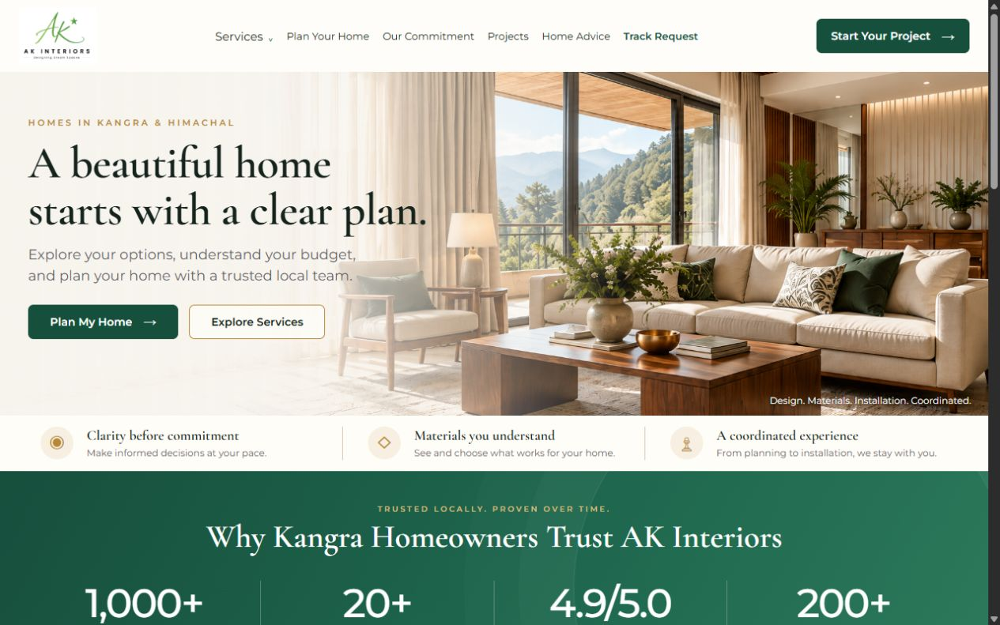
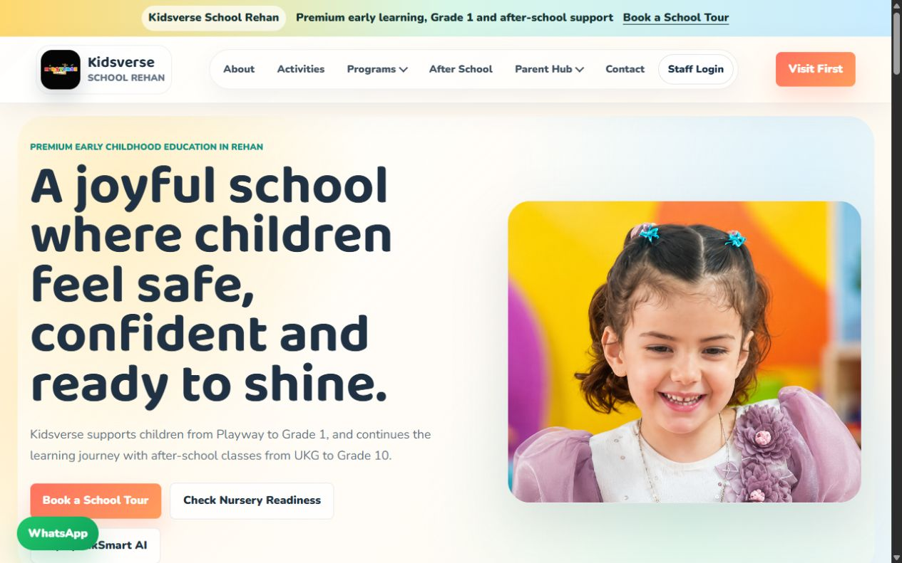

Website design
& development
Considered websites that tell your story and work hard for your business.
ExploreWe help yours find its place online.
Thoughtful websites, digital products and useful tools. Built around your business.
Start a conversationWe bring business understanding, product design and development together to help businesses find their place online—from a first website to a custom digital product.
Behind every business is someone building something that matters. We shape each project around the people it serves and the problem it needs to solve.
Meet our team & foundersScroll to explore

Website design & development · Interiors

Website design & development · Education

Website design & development · Social impact

Website design & development · Education

Website design & development · Education
What are you building? Who are your customers? What should become easier for them?
A clear scope, a customer journey and a design that belongs to your business.
Development, launch and improvements guided by the goals we agree together.
Share a few details about your business or idea. We’ll start with a conversation.
tivorosupport@gmail.com